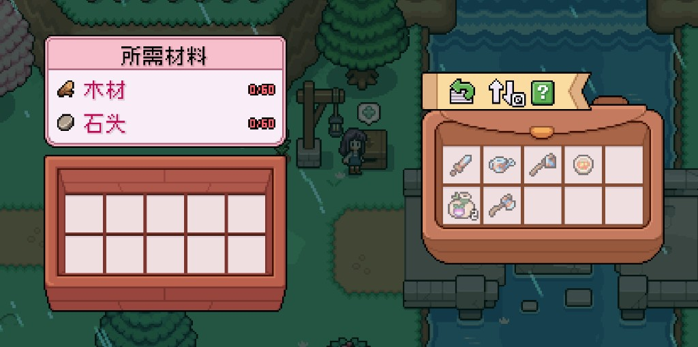
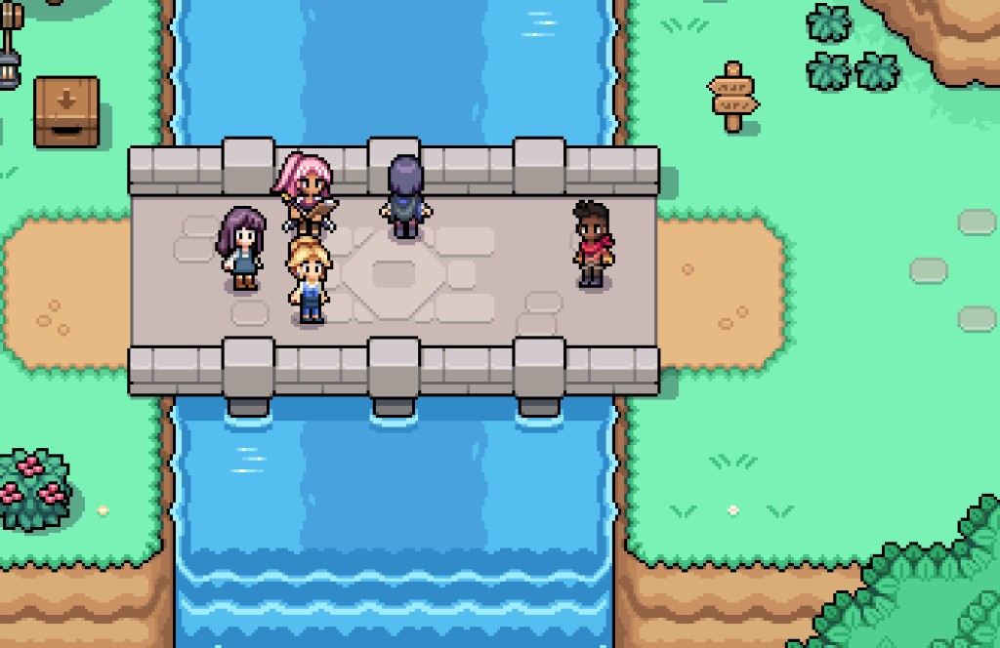
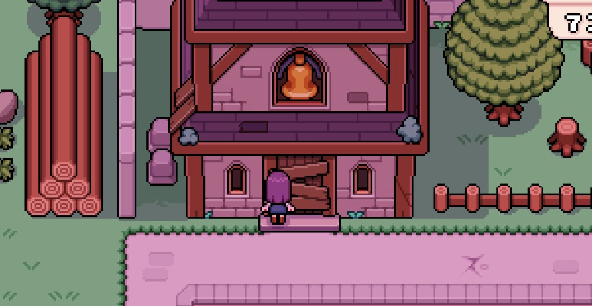

Quick answers
- Read mail about bridges and mines.
- Donate materials when boxes appear on your path.
- Town rank rewards are free tesserae—claim them.
- Bell tower and big cosmetics can wait.
- Request board feeds renown and tools.
Routes first
Repairing the bridge and unlocking paths changed our map more than staring at boarded bells. Follow donation boxes and story prompts.
Town rank loop
Board quests → renown → rank chests. Claim purses beside the board. That money bought seeds without guilt.
Safe to skip
- Every aesthetic repair immediately
- Panic-buying materials at markup
Screenshots from our save
Real Fields of Mistria shots from our first-season play. Captions in English; in-game UI language may differ.



FAQ
Where do materials go?
Look for labeled donation boxes near the project.
Ignore the board?
You can, but free tools and rank cash help.
Unofficial fan guide. Not affiliated with NPC Studio. Verify details in your game version.